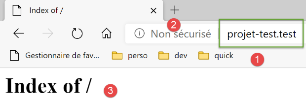
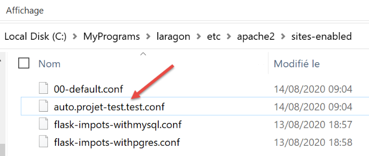

37. 实践练习：第 17 版

此新版本引入了以下更改：
- 它将被移植到 Apache/Windows 服务器上；
- 为了实现这一移植，第 17 版在其 [imports/http-servers/12] 文件夹中包含了所需的所有依赖项。请注意，之前的版本是从整个 [python-flask-2020] 项目中的各个文件夹中获取其依赖项的；
37.1. 应用程序依赖项的迁移

请注意，应用程序依赖项管理由 [syspath] 脚本负责。在上一版本中，该脚本内容如下：
我们需要重定位所有绝对路径依赖于第 8 行 [root_dir] 变量的依赖项，即第 13 至 26 行。
新版本的 [syspath] 脚本如下：
- 第 8–27 行：所有依赖项现在都相对于第 5 行中的 [script_dir] 变量；
- 第 42–45 行：已从 syspath 配置中移除了 [root_dir] 变量；
- 第 10 行：应用程序实体位于 [entities] 文件夹中 [1]；
- 第 12 行：[dao] 层位于 [layers/dao] 文件夹中 [2]；
- 第 14 行：[business] 层位于 [layers/business] 文件夹中 [2]；
- 第 16 行：[Logger, SendMail] 实用程序位于 [utilities] 文件夹中 [3]；
- 第 29–40 行：计算应用程序的 Python 路径时未导入 [myutils] 模块；

37.2. 测试
此时，版本 17 应该可以正常运行。请进行验证。
37.3. 将 Python/Flask 应用程序移植到 Apache/Windows 服务器
37.3.1. 参考资料
为了将 Flask 应用程序移植到 Apache/Windows 环境，我不得不上网搜索。以下是帮助我入门的一个链接：[https://medium.com/@madumalt/flask-app-deployment-in-windows-apache-server-mod-wsgi-82e1cfeeb2ed];
我采用了该链接中的信息，但Apache服务器配置除外。对此，我使用了Laragon提供的Apache服务器配置示例。
37.3.2. 安装 Python mod_wsgi 模块
我们开发的 Python/Flask 应用程序使用了 Flask 自带的 WSGI（Web 服务器网关接口）服务器 [werkzeug]。该服务器的介绍请见 |此处|。链接 [https://www.fullstackpython.com/wsgi-servers.html] 详细说明了 WSGI 服务器的运作原理。 存在多种 |WSGI 服务器|。其中之一便是以 WSGI 模式运行的 Apache 服务器。本文采用此方案，是因为我们安装的 Laragon 自带 Apache 服务器。
为了让 Apache 服务器托管 Python 应用程序，我们需要安装 Python 模块 [mod_wsgi]。安装此模块较为棘手，因为它涉及 C++ 编译。要成功完成安装，您需要一个 Microsoft C++ 编译器。一个简单的解决方案是安装最新版本的 Visual Studio Community [https://visualstudio.microsoft.com/fr/vs/community/]。
如果您仅需使用 Visual Studio 来安装 [mod_wsgi]，则可以将安装范围限定为 C++ 环境：

安装好 C++ 编译器后，可在 PyCharm 终端中安装 [mod_wsgi] 模块：
(venv) C:\Data\st-2020\dev\python\cours-2020\python3-flask-2020\impots\http-servers\11>SET MOD_WSGI_APACHE_ROOTDIR=C:\MyPrograms\laragon\bin\apache\httpd-2.4.35-win64-VC15
(venv) C:\Data\st-2020\dev\python\cours-2020\python3-flask-2020\impots\http-servers\11>pip install mod_wsgi
Collecting mod_wsgi
Using cached mod_wsgi-4.7.1.tar.gz (498 kB)
Using legacy setup.py install for mod-wsgi, since package 'wheel' is not installed.
Installing collected packages: mod-wsgi
Running setup.py install for mod-wsgi ... done
Successfully installed mod-wsgi-4.7.1
- 第 1 行：我们设置了 [MOD_WSGI_APACHE_ROOTDIR] 环境变量的值。该值表示文件系统中 Apache 服务器的位置。此处的位置为 [<laragon>\bin\apache\httpd-2.4.35-win64-VC15]，其中 <laragon> 是 Laragon 的安装文件夹。您可以通过多种方式获取此位置。 以下是使用 Laragon 某项选项获取路径的示例：

在 [1-3] 中，[httpd.conf] 文件是 Apache 服务器的核心配置文件。随后，该文件将在文本编辑器中打开（下文使用 Notepad++）：

在 [2] 中，Apache 安装文件夹即 [conf\httpd.conf] 字符串前面的部分。
让我们回到 [mod_wsgi] 模块的安装步骤：
- 第 3–9 行：安装 [mod_wsgi] 模块；
37.3.3. 配置 Laragon Apache 服务器
我们将配置 Laragon Apache 服务器。首先从其主配置文件 [httpd.conf] 开始：
我们跳转到 [httpd.conf] 文件的末尾：
…
IncludeOptional "C:/MyPrograms/laragon/etc/apache2/alias/*.conf"
IncludeOptional "C:/MyPrograms/laragon/etc/apache2/sites-enabled/*.conf"
Include "C:/MyPrograms/laragon/etc/apache2/httpd-ssl.conf"
Include "C:/MyPrograms/laragon/etc/apache2/mod_php.conf"
# python mod_wsgi
LoadModule wsgi_module "c:/data/st-2020/dev/python/cours-2020/python3-flask-2020/venv/lib/site-packages/mod_wsgi/server/mod_wsgi.cp38-win_amd64.pyd"
- 第 8 行已添加到现有的 [httpd.conf] 文件末尾。它告诉 Apache 服务器在哪里可以找到我们刚刚安装的 [mod_wsgi] 模块的一个组件；
获取第 8 行路径的简便方法是在 PyCharm 终端中运行以下命令：
(venv) C:\Data\st-2020\dev\python\cours-2020\python3-flask-2020\impots\http-servers\11>mod_wsgi-express module-config
LoadModule wsgi_module "c:/data/st-2020/dev/python/cours-2020/python3-flask-2020/venv/lib/site-packages/mod_wsgi/server/mod_wsgi.cp38-win_amd64.pyd"
WSGIPythonHome "c:/data/st-2020/dev/python/cours-2020/python3-flask-2020/venv"
部分文档指出应将第 2 行和第 3 行添加到 [httpd.conf] 文件末尾。但在我的情况下，上述第 3 行导致了错误（缺少 [encodings] 模块）。 因此，该行未被包含在 [httpd.conf] 文件中。仅添加了第 2 行。Apache 配置文件中可用的各种 [mod_wsgi] 模块参数的含义，请参阅 |此处|。
接下来，我们将启用 Apache 服务器上的 HTTPS 协议：

- 在 [1-4] 中，我们在 Apache 服务器上启用 HTTPS 协议；
从现在起，我们将能够使用 [https://serveur/chemin] 格式的 URL；
要配置 Apache 以托管 Flask 应用程序，|上文|提到的链接使用了虚拟主机。Laragon 也提供了虚拟主机管理功能：

- 在 [1-3] 中，我们要求 Laragon 自动创建虚拟主机；
下一步是使用 Laragon 创建一个 Web 项目：
 |
 |  |
- 在 [1-3] 中，创建一个空的 PHP 项目；
- 在 [4-8] 中，Laragon 已创建了一个名为 [auto.projet-test.test] 的虚拟站点，该站点由 [sites-enabled] 文件夹 [7] 中的 [auto.projet-test.test.conf] [8] 文件配置。该文件夹位于 [<laragon>\etc\apache2\sites-enabled]，其中 [laragon] 是 Laragon 的安装目录；
虽然这并非我们当前操作的重点，但您可能好奇想查看我们刚刚创建的 [test-project] 网站：

- 在 [1-5] 中，创建了一个空项目。这是一个位于 [<laragon>/www] 文件夹中的 PHP 项目，其中 [laragon] 是 Laragon 的安装目录；
现在，让我们查看 Laragon 在 [<laragon>\etc\apache2\sites-enabled] 文件夹中生成的 [auto.projet-test.test.conf] 文件：
define ROOT "C:/MyPrograms/laragon/www/projet-test/"
define SITE "projet-test.test"
<VirtualHost *:80>
DocumentRoot "${ROOT}"
ServerName ${SITE}
ServerAlias *.${SITE}
<Directory "${ROOT}">
AllowOverride All
Require all granted
</Directory>
</VirtualHost>
<VirtualHost *:443>
DocumentRoot "${ROOT}"
ServerName ${SITE}
ServerAlias *.${SITE}
<Directory "${ROOT}">
AllowOverride All
Require all granted
</Directory>
SSLEngine on
SSLCertificateFile C:/MyPrograms/laragon/etc/ssl/laragon.crt
SSLCertificateKeyFile C:/MyPrograms/laragon/etc/ssl/laragon.key
</VirtualHost>
- 第 1 行：文件系统中创建的项目的根目录；
- 第 2 行：虚拟服务器的名称。该服务器的 URL 将采用 [http(s)://test-project.test/path] 的形式；
- 第 4–12 行：针对端口 80（第 4 行）和 HTTP 协议的虚拟站点配置；
- 第 14–27 行：针对端口 443（第 14 行）和 HTTPS 协议的虚拟主机配置；
让我们来看看虚拟服务器是如何工作的。首先，启动 Apache 和 PHP 服务器：

然后，使用浏览器访问 URL [http://projet-test.test/]：

- 在[1]中，所请求的URL；
- 在 [2] 中，使用了 HTTP 协议；
- 在 [3] 中，由于 [projet-test] 项目为空，因此我们获取到其文件夹的索引（即其内容列表），即一个空索引；
现在让我们请求安全 URL [https://projet-test.test/]：

- 在 [1-2] 中，我们得到与之前相同的响应，但使用了 HTTPS 协议 [1]；
创建虚拟服务器 [test-project.test] 后，在文件 [<windows>/system32/drivers/etc/hosts] 中生成了一条新条目：

# Copyright (c) 1993-2009 Microsoft Corp.
#
# This is a sample HOSTS file used by Microsoft TCP/IP for Windows.
#
# This file contains the mappings of IP addresses to host names. Each
# entry should be kept on an individual line. The IP address should
# be placed in the first column followed by the corresponding host name.
# The IP address and the host name should be separated by at least one
# space.
#
# Additionally, comments (such as these) may be inserted on individual
# lines or following the machine name denoted by a '#' symbol.
#
# For example:
#
# 102.54.94.97 rhino.acme.com # source server
# 38.25.63.10 x.acme.com # x client host
# localhost name resolution is handled within DNS itself.
# 127.0.0.1 localhost
# ::1 localhost
127.0.0.1 projet-test.test #laragon magic!
- 第 23 行：名称 [test-project.test] 的 IP 地址是 127.0.0.1，即 [localhost]（第 20 行）的地址，也就是本地机器的地址。 因此，当你在浏览器中输入 URL [http://projet-test.test/chemin] 时，请求会被发送到地址 127.0.0.1 的 80 端口。随后，本地机器（localhost）上的 Apache 服务器会做出响应。
您可能会疑惑：当输入请求 [http://projet-test.test/] 时，Apache 服务器为何会使用文件 [<laragon>\etc\apache2\sites-enabled\auto.projet-test.test.conf] 中的配置：

要理解这一点，我们需要查看浏览器在发出此请求时向 Apache 服务器发送了什么。让我们使用 Postman 来演示：

- 在 [1-3] 中，我们发送了一个 HTTPS 请求 [1]；
- 在 [4] 中，Postman 提示未识别到安全证书。HTTPS 协议会在 Web 客户端（此处为 Postman）与 Apache 服务器之间建立加密连接。这种加密连接是通过客户端与服务器之间交换的证书来建立的。由服务器发起建立加密连接的过程，向客户端发送安全证书。 要使该证书被客户端接受，它必须经过签名——换言之，必须从有权签发安全证书的公司购买。当我们启用 Laragon 的 HTTPS 协议时，Laragon 会自行生成安全证书。这种证书被称为自签名证书。大多数 Web 客户端在收到自签名证书时会发出警告。这就是 Postman 在 [4] 中所做的。 随后，大多数 Web 客户端会提供禁用对服务器发送的安全证书进行验证的选项。这正是 Postman 在 [5] 中提供的功能；
我们点击链接 [5] 以禁用 SSL（安全套接层）验证。SSL/TLS（传输层安全）是一种安全协议，可在互联网上的两台机器之间建立安全的通信通道。这是 Apache 在此处使用的协议。响应如下：

我们收到的页面与传统浏览器显示的完全相同。现在让我们查看 Postman 控制台（Ctrl-Alt-C）中的客户端/服务器对话：
- 第 6 行：HTTP [Host] 标头指定了 Web 客户端所访问的服务器名称。这就是虚拟服务器的原理。在一个单一的 IP 地址（此处为 127.0.0.1）上，Web 服务器可以托管多个具有不同名称的网站。HTTP [Host] 标头允许客户端指定其正在访问的服务器（此处为地址 127.0.0.1）；
那么 Apache 具体做了什么？
启动时，Apache 会读取 [[<laragon>\etc\apache2\sites-enabled]] 目录中所有配置文件：
每个配置文件都定义了一个虚拟服务器。例如，在文件 [auto.projet-test.test.conf] 中，你会发现以下这一行：
define ROOT "C:/MyPrograms/laragon/www/projet-test/"
define SITE "projet-test.test"
…
第 2 行定义了 [test-project.test] 虚拟服务器。 文件 [auto.projet-test.test.conf] 是该虚拟服务器的配置文件。由于 Apache 服务器在启动时会读取 [<laragon>\etc\apache2\sites-enabled] 文件夹中的所有配置文件，因此它知道存在一个名为 [projet-test.test] 的虚拟服务器。因此，当它从 Postman 客户端收到以下 HTTPS 请求时：
它识别出该请求是发往虚拟服务器 [test-project.test]（第 6 行）的，并且该服务器确实存在。随后，它使用虚拟服务器 [test-project.test] 的配置来响应 Postman 客户端。
37.4. 创建您的第一个 Apache 虚拟服务器
既然我们已经了解了虚拟服务器的用途及其配置方法，接下来就来创建一个。它将用于运行一个安装在 Apache 服务器上 [Apache] 文件夹中的 Python Flask 应用程序（当前部署的 Apache 版本为 17）：
我们将 |link| 章节中开发的应用程序（一个日期/时间 Web 服务）放置在 [http-servers/12/apache/example] 文件夹中：

[date_time_server.py] 服务器代码如下：
Flask 应用程序通过标识符 [application] 进行引用（第 14、43、44 行）。此名称是必需的。如果你使用其他标识符来引用 Flask 应用程序，应用程序将无法运行，并会显示一条错误消息，指出无法找到请求的 URL。该错误消息不会提供错误来源的任何提示。因此，你必须对此格外小心。
第 34 行引用的 HTML 文件如下：
<!DOCTYPE html>
<html lang="fr">
<head>
<meta charset="UTF-8">
<title>Date et heure du moment</title>
</head>
<body>
<b>Date et heure du moment : {{page.date_heure}}</b>
</body>
</html>
- [date-time-server] 将作为托管此应用程序的虚拟服务器。其配置将通过文件 [<laragon>\etc\apache2\sites-enabled\date-time-server.conf] 进行（请注意，此名称仅为示例——Apache 会读取 [sites-enabled] 目录下的所有文件以识别其中的虚拟站点）；
我们首先通过复制 [auto.projet-test.test.conf] 文件来获取该文件，然后对其进行修改。

[date-time-server.conf] 文件的内容如下：
- 第 7 行：为该文件配置的虚拟服务器命名；
- 第 2 行：设置 [ROOT] 变量的值，该变量在第 14 行和第 27 行中使用；
- 第 14 行和第 27 行：指定当虚拟服务器收到请求时必须执行的 Python 脚本的路径。 在此，我们指定由 Python 脚本 [date_time_server.py] 处理针对 [date-time-server] 服务器的请求。这与 [auto.projet-test.test.conf] 文件的区别在于，前者配置的是 PHP 服务器，而 [date-time-server.conf] 文件配置的是 Python 服务器；
- 第 14 行和第 27 行：此处的 [WSGIScriptAlias /] 属性指定 [date-time-server] 服务器的根目录为 [/]。因此，应用程序的 URL 将采用 [http(s)://date-time-server/path] 的形式；
- 第 14 行和第 27 行：我们可以为应用程序指定不同的根目录，例如 [WSGIScriptAlias /show]。在这种情况下，应用程序的 URL 将采用 [http(s)://show/date-time-server/path] 的形式；
我们还需要在 [<windows>/system32/drivers/etc/hosts] 文件中添加一行：
我们添加第 25 行，将 IP 地址 [127.0.0.1] 分配给虚拟服务器 [date-time-server]。
让我们检查一下所有设置。启动 Apache 服务器：
接下来，我们使用浏览器访问 URL [https://date-time-server]：
- 在 [1] 中，是请求的 URL；
- 在 [3] 中，服务器的响应；
- 在 [2] 中，浏览器提示 HTTPS 连接不安全，因为它检测到 Apache 服务器发送的证书是自签名的；
现在，在 [date-time-server.conf] 文件中，让我们在第 14 行和第 27 行添加一个别名：
WSGIScriptAlias /show-date-time "${ROOT}/date_time_server.py"
Apache 服务器不会立即识别此更改。您必须重新加载它：

随后我们请求 URL [https://date-time-server/show-date-time]。服务器的响应如下：

37.5. 将税费计算应用程序移植到 Apache / Windows
[apache] 目录 [2] 最初是通过复制 [main] 目录创建的。确保它们位于同一层级非常重要，这样从 [1] 复制到 [2] 的 [syspath.py] 脚本中的路径才能保持有效。 为避免干扰正在运行的 [impots / http-servers/ 12] 应用程序，我们将由 Apache 服务器执行的配置文件放置在 [apache] 目录中；

- [2]中的[config]文件与[1]中的[config]文件完全一致；
- [2]中的[syspath]文件与[1]中的[syspath]文件相同；
- [2]中的[main_withmysql]文件是[1]中的[main]文件，并进行了以下修改：
主脚本 [main] 接收了一个 [mysql / pgres] 参数，用于指定要使用的数据库管理系统（DBMS）。[main_withmysql] 脚本使用 MySQL 数据库管理系统：
第 7 行将数据库管理系统设置为 MySQL。
- 来自[2]的[main_withpgres]文件是在[1]的[main]文件基础上进行了以下修改：它使用PostgreSQL数据库管理系统：
在第 7 行，我们将数据库管理系统 (DBMS) 设置为 PostgreSQL。
完成上述设置后，我们创建以下脚本 [main_withmysql.wsgi]（后缀名称不限）：
脚本 [main_withmysql.wsgi] 将是 Apache 服务器在 WSGI 模式下执行的目标：
- Apache 服务器的目标本可以是脚本 [main_withmysql.py]，就像之前对脚本 [date_time_server.py] 所做的那样。但这需要稍作修改：
- 与运行控制台脚本不同，在 Apache 环境中，包含目标脚本 [main_withmysql.py] 的目录并不属于 Python 路径。因此，[main_withmysql.py] 脚本的第 6 行会引发错误；
- 第二个必要的修改是：在 [main_withmysql] 中，Flask 应用程序通过标识符 [app] 进行引用。我们知道，对于 Apache/WSGI，它还必须通过标识符 [application] 进行引用；
- 我们不修改 [main_withmysql.py]，而是更改 Apache 目标。现在它将变为上方的 [main_withmysql.wsgi] 脚本：
- 第 1–7 行：我们将脚本所在目录添加到 Python 路径中。因此，[main_withmysql.py] 的第 6 行不再引发错误；
- 第 9–10 行：导入 [main_withmysql.py] 会触发其执行。此外，我们使用 Apache 在 WSGI 模式下要求的 [application] 标识符，引用 [main_withmysql.py] 中定义的 Flask 应用程序 [app]；
对 [main_withpgres.wsgi] 脚本也进行同样的操作：
现在我们已经有了 Apache 服务器的可执行目标。接下来需要创建两个虚拟服务器，每个目标对应一个。
在 [<laragon>\etc\apache2\sites-enabled] 目录下，我们创建一个名为 [flask-imports-withmysql.conf] 的文件（文件名不限）：

# dossier du script .wsgi
define ROOT "C:/Data/st-2020/dev/python/cours-2020/python3-flask-2020/impots/http-servers/12/apache"
# nom du site web configuré par ce fichier
# ici il s'appellera flask-impots-withmysql
# les URL seront du type http(s)://flask-impots-withmysql/path
define SITE "flask-impots-withmysql"
# mettre l'adresse IP 127.0.0.1 pour site SITE dans c:/windows/system32/drivers/etc/hosts
# mettre ici les chemins des bibliothèques Python à utiliser - les séparer par des virgules
# ici les bibliothèques d'un environnement virtuel Python
WSGIPythonPath "C:/Data/st-2020/dev/python/cours-2020/python3-flask-2020/venv/lib/site-packages"
# Python Home - nécessaire uniquement s'il y a plusieurs versions de Python installées
# WSGIPythonHome "C:/Program Files/Python38"
# URL HTTP
<VirtualHost *:80>
# avec l'alias / les URL auront la forme /{prefixe_url}/action/...
# avec l'alias /impots les URL auront la forme /impots/{prefixe_url}/action/...
# où [prefixe_url] est défini dans parameters.py
WSGIScriptAlias / "${ROOT}/main_withmysql.wsgi"
DocumentRoot "${ROOT}"
ServerName ${SITE}
ServerAlias *.${SITE}
<Directory "${ROOT}">
AllowOverride All
Require all granted
</Directory>
</VirtualHost>
# URL sécurisées avec HTTPS
<VirtualHost *:443>
# avec l'alias / les URL auront la forme /{prefixe_url}/action/...
# avec l'alias /impots les URL auront la forme /impots/{prefixe_url}/action/...
# où [prefixe_url] est défini dans parameters.py
WSGIScriptAlias / "${ROOT}/main_withmysql.wsgi"
DocumentRoot "${ROOT}"
ServerName ${SITE}
ServerAlias *.${SITE}
<Directory "${ROOT}">
AllowOverride All
Require all granted
</Directory>
SSLEngine on
SSLCertificateFile C:/MyPrograms/laragon/etc/ssl/laragon.crt
SSLCertificateKeyFile C:/myprograms/laragon/etc/ssl/laragon.key
</VirtualHost>
- 第 2 行：应用程序根目录，即我们创建的 [apache] 文件夹；
- 第 23、38 行：我们创建的目标 [main_withmysql.wsgi]：
- 第 7 行：虚拟主机的名称将命名为 [flask-impots-withmysql]；
- 第 13 行：[WSGIPythonPath] 指令允许我们将文件夹添加到 Python 路径中。在此，Apache 并不知道我们使用了虚拟环境来开发应用程序，也不知道应用程序使用的所有模块都位于该虚拟环境中。 因此，在第 13 行，我们需要添加包含所用虚拟环境中所有模块的文件夹。一种方法是将该目录复制到文件系统中的另一个位置并引用该位置；另一种方法是直接在 [main_withmysql.wsgi] 目标内将该目录添加到 Python 路径中（这可能是更好的解决方案）；
- 第 16 行：我们可以向 Apache 指定文件系统中的 Python 安装目录。通常，该目录位于计算机的 PATH 环境变量中，因此这行代码往往是多余的（本例中便是如此）。不过，如果计算机上安装了多个 Python 版本，且所需的版本未包含在计算机的 PATH 环境变量中，那么这行代码就能解决该问题；
同样，创建一个 [flask-impots-withpgres.conf] 文件：
# dossier du script .wsgi
define ROOT "C:/Data/st-2020/dev/python/cours-2020/python3-flask-2020/impots/http-servers/12/apache"
# nom du site web configuré par ce fichier
# ici il s'appellera flask-impots-withmysql
# les URL seront du type http(s)://flask-impots-withmysql/path
define SITE "flask-impots-withpgres"
# mettre l'adresse IP 127.0.0.1 pour site SITE dans c:/windows/system32/drivers/etc/hosts
# mettre ici les chemins des bibliothèques Python à utiliser - les séparer par des virgules
# ici les bibliothèques d'un environnement virtuel Python
WSGIPythonPath "C:/Data/st-2020/dev/python/cours-2020/python3-flask-2020/venv/lib/site-packages"
# Python Home - nécessaire uniquement s'il y a plusieurs versions de Python installées
# WSGIPythonHome "C:/Program Files/Python38"
# URL HTTP
<VirtualHost *:80>
# avec l'alias / les URL auront la forme /{prefixe_url}/action/...
# avec l'alias /impots les URL auront la forme /impots/{prefixe_url}/action/...
# où [prefixe_url] est défini dans parameters.py
WSGIScriptAlias / "${ROOT}/main_withpgres.wsgi"
DocumentRoot "${ROOT}"
ServerName ${SITE}
ServerAlias *.${SITE}
<Directory "${ROOT}">
AllowOverride All
Require all granted
</Directory>
</VirtualHost>
# URL sécurisées avec HTTPS
<VirtualHost *:443>
# avec l'alias / les URL auront la forme /{prefixe_url}/action/...
# avec l'alias /impots les URL auront la forme /impots/{prefixe_url}/action/...
# où [prefixe_url] est défini dans parameters.py
WSGIScriptAlias / "${ROOT}/main_withpgres.wsgi"
DocumentRoot "${ROOT}"
ServerName ${SITE}
ServerAlias *.${SITE}
<Directory "${ROOT}">
AllowOverride All
Require all granted
</Directory>
SSLEngine on
SSLCertificateFile C:/MyPrograms/laragon/etc/ssl/laragon.crt
SSLCertificateKeyFile C:/myprograms/laragon/etc/ssl/laragon.key
</VirtualHost>
我们将所有这些文件保存下来，启动 Apache 服务器以及 MySQL 和 PostgreSQL 数据库。在 [configs/parameters.py] 中，应用程序配置了 URL 前缀 [/do] 以及 [with_csrftoken=False]（不使用 CSRF 令牌）。我们请求 URL [https://flask-impots-withmysql/do]。服务器的响应如下：

现在我们请求 URL [https://flask-impots-pgres/do]。响应如下：

两个应用程序均运行正常。
现在，让我们修改 [flask-imports-withmysql.conf] 文件中的 [WSGIScriptAlias] 参数：
- 第 11 行和第 20 行，WSI 别名现在是 [/impots]；
我们停止并重启 Apache 服务器，然后请求 URL [https://flask-impots-withmysql/impots/do]。服务器的响应如下：

发生了崩溃。URL [1] 告诉了我们原因。它本应是 [https://flask-impots-withmysql/impots/do/afficher-vue-authentification]。缺少了 WSGI 别名。这是我们应用程序中的一个错误。它知道如何处理 URL 前缀（/do 存在）。 有人可能会认为，在应用程序中添加前缀 [/imports/do] 就能解决上述问题。但事实并非如此。这样反而会引发其他类型的问题。因为 WSGI 别名并不像 URL 前缀那样工作。
让我们试着理解发生了什么。我们请求了 URL [https://flask-impots-withmysql/impots/do]。我们期望看到身份验证视图。在上文的 [1] 中，我们看到应用程序请求显示该视图，但使用的 URL 不正确。让我们来分析一下请求路径 [https://flask-impots-withmysql/impots/do]。
首先，执行了以下路由（configs/routes.py）：
# les routes de l'application Flask
# racine de l'application
app.add_url_rule(f'{prefix_url}/', methods=['GET'],
view_func=routes.index)
在我们的示例中，第 3 行中的路由是 [https://flask-impots-withmysql/impots/do]。我们可以看到，该路由已去除了 [https://flask-impots-withmysql/impots] 部分，简化为 [/do]。 至于 [https://flask-impots-withmysql] 这一部分，这是正常的；路由中不包含服务器名称。但我们可以看到，它也不包含 WSGI 别名 [/imports]。这一点很重要。即使使用了 WSGI 别名，我们的初始路由仍然有效。
现在让我们看看第 4 行（configs/routes_without_csrftoken）中的 [index] 函数做了什么：
在第 4 行，我们被重定向到了 [init_session] 函数的 URL。在 [configs/routes.py] 中，该函数已被关联到路由 [/do/init-session/html]：
# init-session
app.add_url_rule(f'{prefix_url}/init-session/<string:type_response>{csrftoken_param}', methods=['GET'],
view_func=routes.init_session)
第 2 行：在我们的测试中，[csrftoken_param] 是空字符串。应用程序在此处未处理 CSRF 令牌。
[init_session] 函数的定义如下（configs/routes_without_csrftoken）：
第 4 行：我们启动操作处理链 [init-session]。该链在 [responses/HtmlResponse] 中以如下方式结束：
…
# now it's time to generate the URL redirection, not forgetting the CSRF token if requested
if config['parameters']['with_csrftoken']:
csrf_token = f"/{generate_csrf()}"
else:
csrf_token = ""
# redirect response
return redirect(f"{config['parameters']['prefix_url']}{ads['to']}{csrf_token}"), status.HTTP_302_FOUND
[init-session] 操作是一个 ADS（Action Do Something）操作，它以重定向到视图结束（第 9 行）。问题就出在这里。第 9 行中的 [redirect] 函数不会自动将 WSGI 别名添加到重定向 URL 中。如上图所示，重定向 URL 中缺少 /imports 别名。
以下版本提供了解决 WSGI 别名问题的方案。